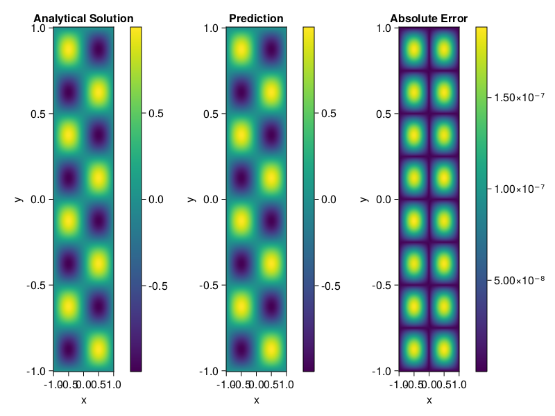

Helmholtz equation
Let us consider the Helmholtz equation in two space dimensions
\[\begin{aligned} &\Delta u(x, y)+k^{2} u(x, y)=q(x, y), \quad(x, y) \in \Omega:=(-1,1)^2 \\ &u(x, y)=0, \quad(x, y) \in \partial \Omega \end{aligned}\]
where
\[q(x, y)=-\left(a_{1} \pi\right)^{2} \sin \left(a_{1} \pi x\right) \sin \left(a_{2} \pi y\right)-\left(a_{2} \pi\right)^{2} \sin \left(a_{1} \pi x\right) \sin \left(a_{2} \pi y\right)+k^{2} \sin \left(a_{1} \pi x\right) \sin \left(a_{2} \pi y\right).\]
The excat solution is $u(x,y)=\sin{a_1\pi x}\sin{a_2\pi y}$. We chose $k=1, a_1 = 1$ and $a_2 = 4$.
using ModelingToolkit, IntervalSets, Sophon, Lux, CUDA
using Optimization, OptimizationOptimJL
@parameters x,y
@variables u(..)
Dxx = Differential(x)^2
Dyy = Differential(y)^2
a1 = 1
a2 = 4
k = 1
q(x,y) = -(a1*π)^2 * sin(a1*π*x) * sin(a2*π*y) - (a2*π)^2 * sin(a1*π*x) * sin(a2*π*y) + k^2 * sin(a1*π*x) * sin(a2*π*y)
eq = Dxx(u(x,y)) + Dyy(u(x,y)) + k^2 * u(x,y) ~ q(x,y)
domains = [x ∈ Interval(-1,1), y ∈ Interval(-1,1)]
bcs = [u(-1,y) ~ 0, u(1,y) ~ 0, u(x, -1) ~ 0, u(x, 1) ~ 0]
@named helmholtz = PDESystem(eq, bcs, domains, [x,y], [u(x,y)])\[ \begin{align} \frac{\mathrm{d}^{2}}{\mathrm{d}x^{2}} u\left( x, y \right) + \frac{\mathrm{d}^{2}}{\mathrm{d}y^{2}} u\left( x, y \right) + u\left( x, y \right) =& - 166.7832748185191 \sin\left( 3.141592653589793 x \right) \sin\left( 12.566370614359172 y \right) \end{align} \]
Note that the boundary conditions are compatible with periocity, which allows us to apply BACON.
chain = BACON(2, 1, 5, 2; hidden_dims = 32, num_layers=5)
pinn = PINN(chain) # call `gpu` on it if you want to use gpu
sampler = QuasiRandomSampler(300, 100)
strategy = NonAdaptiveTraining()
prob = Sophon.discretize(helmholtz, pinn, sampler, strategy)
@time res = Optimization.solve(prob, BFGS(); maxiters=1000)u: ComponentVector{Float64}(filters = (filter_1 = (bias = [0.2386393164826625; -0.1291024199141704; … ; 0.648637966193733; 1.0510624966003264;;]), filter_2 = (bias = [-0.8609956894315571; 1.1145216419130666; … ; 1.2549483926192992; -0.48012217024896764;;]), filter_3 = (bias = [1.0381571546911816; -0.49302719158215114; … ; 0.8514883728480334; 1.017011946037685;;]), filter_4 = (bias = [0.3296803544374395; 0.861349236215755; … ; -0.34120910136483334; 0.5294048116264;;]), filter_5 = (bias = [-0.7091466055398293; -0.46065507267525824; … ; -0.07440143062965904; -0.7143891564470953;;])), linear_layers = (layer_1 = (weight = [-0.16801609346798257 -0.1339951755017953 … 0.3680564110998509 0.24841796841846367; 0.05262769101113949 -0.3250586349609502 … -0.07864484278491028 0.3210957470047061; … ; -0.3170891960117847 -0.3779290183217765 … -0.0720931837117334 0.3838613947985778; -0.13824430393220194 -0.14191397239431935 … -0.2808591627088426 0.21880006215574335], bias = [0.042351640570578074; -0.02254655623941863; … ; -0.018251467486796343; 0.01625381256028343;;]), layer_2 = (weight = [-0.20639999244616933 0.23604639902722063 … 0.1885330483989233 -0.11718230984724479; -0.40201115978584867 -0.053692849694359876 … 0.0396720087075172 0.06369824691514442; … ; 0.2736461342837992 0.33323308434057153 … -0.27656097571688354 -0.04161922922210555; 0.33511089346836215 -0.4376980972648146 … -0.23403765218440428 -0.39477517926534206], bias = [0.02973794011731694; -0.022474318215356517; … ; 0.001990771978548404; -0.03832594852720414;;]), layer_3 = (weight = [-0.006402504479238213 0.08274321325410222 … -0.0005164086670151241 -0.41616360820970727; 0.26968682268363636 -0.1015373971518775 … -0.06641559249527097 -0.19687403274871537; … ; -0.11181482294028544 -0.417045131902396 … -0.09168916939624382 -0.3124290884667577; 0.026043326813521984 -0.3119527631509124 … 0.05138386999998653 0.4267604098282144], bias = [0.001196769932297181; -0.026546318215069933; … ; -0.013700403105002947; -0.03075456309860953;;]), layer_4 = (weight = [-0.3545298475991882 0.3090198363985963 … 0.13059373169889082 0.08505159533269156; 0.33108258164578663 -0.026379157819968514 … 0.31859094487640627 -0.42145502885383035; … ; 0.3123502131787676 0.2913591667448049 … 0.3336304406437945 -0.11092050354725812; -0.3925690233186082 -0.0738798195533017 … -0.1413245007710944 0.13056613879928067], bias = [-0.000303528048412249; 0.01383565779808418; … ; -0.0005405769707860136; 0.007582027913248719;;])), output_layer = (weight = [0.02447920217583443 0.00029287289958492165 … 0.02856467184996576 0.2360654642601047], bias = [-0.047465782346423555;;]))Let's plot the result.
phi = pinn.phi
xs, ys= [infimum(d.domain):0.01:supremum(d.domain) for d in domains]
u_analytic(x,y) = sinpi(a1*x)*sinpi(a2*y)
u_real = [u_analytic(x,y) for x in xs, y in ys]
phi_cpu = cpu(phi) # in case you are using GPU
ps_cpu = cpu(res.u)
u_pred = [sum(phi_cpu(([x,y]), ps_cpu)) for x in xs, y in ys]
using CairoMakie
axis = (xlabel="x", ylabel="y", title="Analytical Solution")
fig, ax1, hm1 = heatmap(xs, ys, u_real, axis=axis)
Colorbar(fig[:, end+1], hm1)
ax2, hm2= heatmap(fig[1, end+1], xs, ys, u_pred, axis= merge(axis, (;title = "Prediction")))
Colorbar(fig[:, end+1], hm2)
ax3, hm3 = heatmap(fig[1, end+1], xs, ys, abs.(u_pred-u_real), axis= merge(axis, (;title = "Absolute Error")))
Colorbar(fig[:, end+1], hm3)
fig